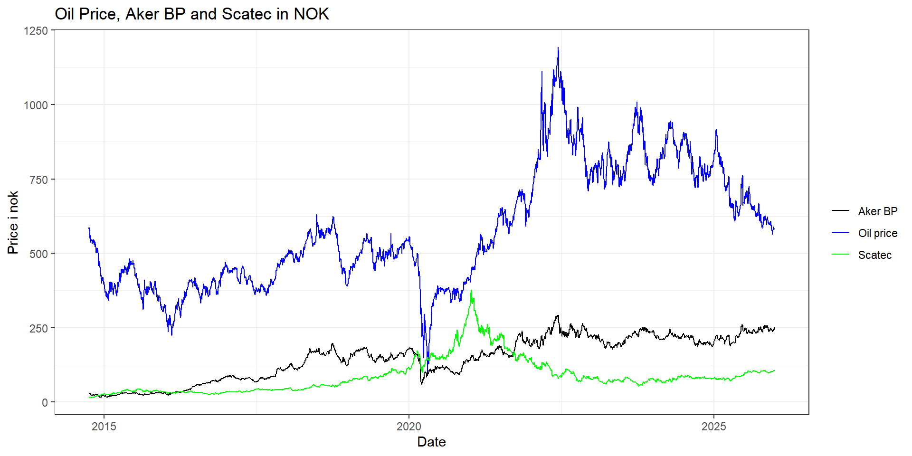
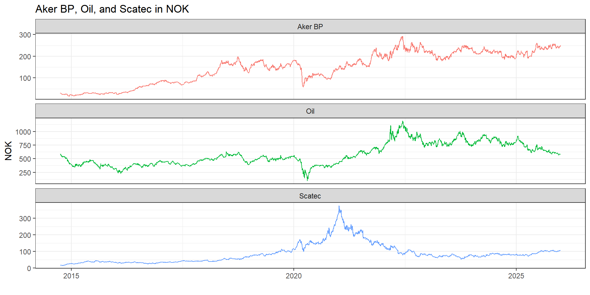
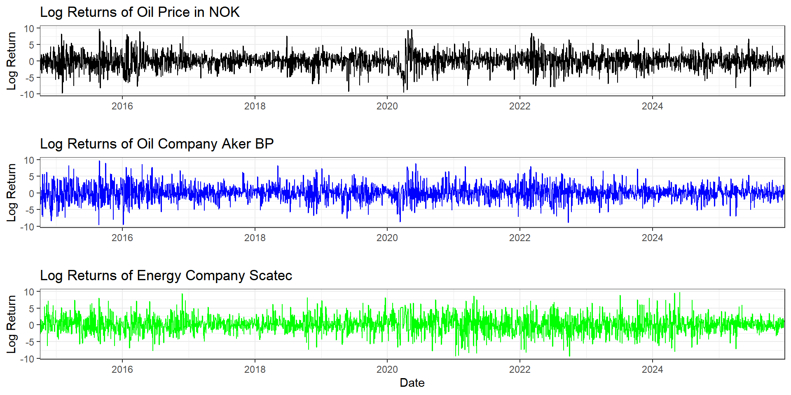
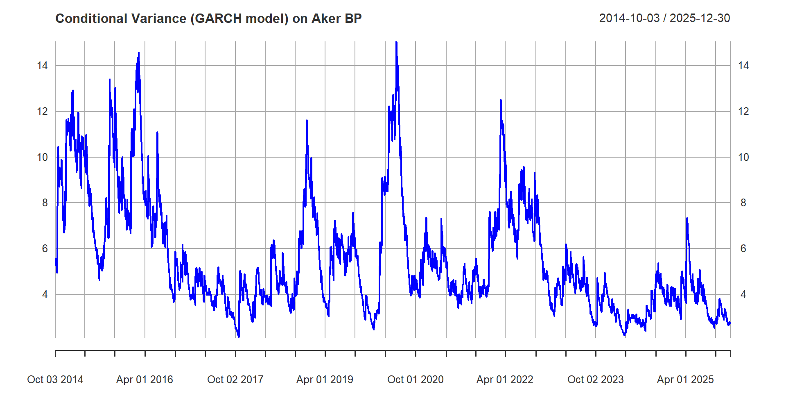
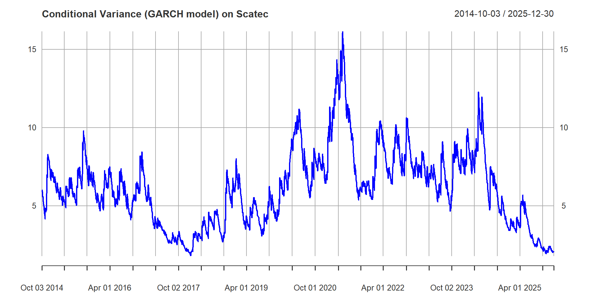
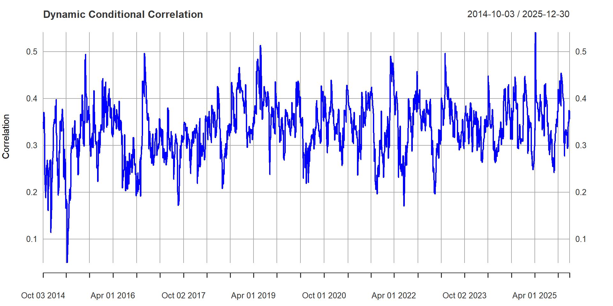
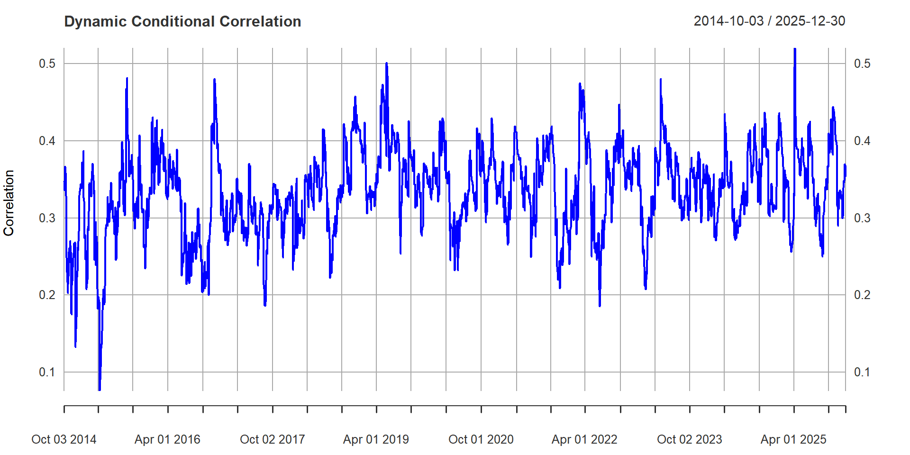

Aker BP, oljeselskap
Scatec, fornybar energi selskap
Hypothesis 3 (H3):
The conditional correlation between oil price changes and stock returns of the new energy company exhibits both short-term and long-term persistence.



ARCH test
GARCH-modell
DCC-GARCH
DCC-GARCH T dist and norm
ARCH LM-test; Null hypothesis: no ARCH effects data: X Chi-squared = 277.03, df = 5, p-value < 2.2e-16
ARCH LM-test; Null hypothesis: no ARCH effects data: Y Chi-squared = 106.94, df = 5, p-value < 2.2e-16
ARCH LM-test; Null hypothesis: no ARCH effects data: Z Chi-squared = 64.827, df = 5, p-value = 1.217e-12
*---------------------------------* * GARCH Model Fit * *---------------------------------* Conditional Variance Dynamics ----------------------------------- GARCH Model : sGARCH(1,1) Mean Model : ARFIMA(0,0,0) Distribution : norm Optimal Parameters ------------------------------------ Estimate Std. Error t value Pr(>|t|) mu 0.078645 0.041454 1.8972 0.057804 omega 0.069749 0.021970 3.1747 0.001500 alpha1 0.040352 0.006456 6.2504 0.000000 beta1 0.946562 0.008948 105.7857 0.000000 Robust Standard Errors: Estimate Std. Error t value Pr(>|t|) mu 0.078645 0.042301 1.8592 0.063003 omega 0.069749 0.026781 2.6044 0.009202 alpha1 0.040352 0.007953 5.0735 0.000000 beta1 0.946562 0.010638 88.9803 0.000000 LogLikelihood : -5995.243 Information Criteria ------------------------------------ Akaike 4.4704 Bayes 4.4792 Shibata 4.4704 Hannan-Quinn 4.4736 Weighted Ljung-Box Test on Standardized Residuals ------------------------------------ statistic p-value Lag[1] 0.0865 0.7687 Lag[2*(p+q)+(p+q)-1][2] 2.2915 0.2187 Lag[4*(p+q)+(p+q)-1][5] 3.9173 0.2646 d.o.f=0 H0 : No serial correlation Weighted Ljung-Box Test on Standardized Squared Residuals ------------------------------------ statistic p-value Lag[1] 0.9741 0.32366 Lag[2*(p+q)+(p+q)-1][5] 6.3320 0.07506 Lag[4*(p+q)+(p+q)-1][9] 9.3038 0.07035 d.o.f=2 Weighted ARCH LM Tests ------------------------------------ Statistic Shape Scale P-Value ARCH Lag[3] 2.917 0.500 2.000 0.08765 ARCH Lag[5] 6.625 1.440 1.667 0.04277 ARCH Lag[7] 7.289 2.315 1.543 0.07521 Nyblom stability test ------------------------------------ Joint Statistic: 1.1782 Individual Statistics: mu 0.1995 omega 0.3376 alpha1 0.4646 beta1 0.3576 Asymptotic Critical Values (10% 5% 1%) Joint Statistic: 1.07 1.24 1.6 Individual Statistic: 0.35 0.47 0.75 Sign Bias Test ------------------------------------ t-value prob sig Sign Bias 0.5533 0.5801 Negative Sign Bias 0.7833 0.4335 Positive Sign Bias 0.8320 0.4055 Joint Effect 5.7422 0.1249 Adjusted Pearson Goodness-of-Fit Test: ------------------------------------ group statistic p-value(g-1) 1 20 70.58 7.378e-08 2 30 76.83 3.341e-06 3 40 97.73 6.036e-07 4 50 97.22 5.004e-05 Elapsed time : 0.1283429

*---------------------------------* * GARCH Model Fit * *---------------------------------* Conditional Variance Dynamics ----------------------------------- GARCH Model : sGARCH(1,1) Mean Model : ARFIMA(0,0,0) Distribution : norm Optimal Parameters ------------------------------------ Estimate Std. Error t value Pr(>|t|) mu 0.087065 0.043120 2.0191 0.043477 omega 0.018328 0.009323 1.9659 0.049307 alpha1 0.028199 0.002528 11.1529 0.000000 beta1 0.968858 0.002157 449.1995 0.000000 Robust Standard Errors: Estimate Std. Error t value Pr(>|t|) mu 0.087065 0.043942 1.9814 0.047551 omega 0.018328 0.011938 1.5353 0.124708 alpha1 0.028199 0.002191 12.8684 0.000000 beta1 0.968858 0.001053 919.7079 0.000000 LogLikelihood : -6126.489 Information Criteria ------------------------------------ Akaike 4.5682 Bayes 4.5770 Shibata 4.5682 Hannan-Quinn 4.5714 Weighted Ljung-Box Test on Standardized Residuals ------------------------------------ statistic p-value Lag[1] 0.02604 0.8718 Lag[2*(p+q)+(p+q)-1][2] 0.94699 0.5158 Lag[4*(p+q)+(p+q)-1][5] 1.86082 0.6517 d.o.f=0 H0 : No serial correlation Weighted Ljung-Box Test on Standardized Squared Residuals ------------------------------------ statistic p-value Lag[1] 11.12 0.0008556 Lag[2*(p+q)+(p+q)-1][5] 15.23 0.0003850 Lag[4*(p+q)+(p+q)-1][9] 17.04 0.0011268 d.o.f=2 Weighted ARCH LM Tests ------------------------------------ Statistic Shape Scale P-Value ARCH Lag[3] 3.327 0.500 2.000 0.06817 ARCH Lag[5] 5.475 1.440 1.667 0.07971 ARCH Lag[7] 5.884 2.315 1.543 0.14922 Nyblom stability test ------------------------------------ Joint Statistic: 0.738 Individual Statistics: mu 0.2379 omega 0.2861 alpha1 0.1258 beta1 0.1559 Asymptotic Critical Values (10% 5% 1%) Joint Statistic: 1.07 1.24 1.6 Individual Statistic: 0.35 0.47 0.75 Sign Bias Test ------------------------------------ t-value prob sig Sign Bias 2.5230 1.169e-02 ** Negative Sign Bias 4.0212 5.949e-05 *** Positive Sign Bias 0.4232 6.722e-01 Joint Effect 17.4507 5.708e-04 *** Adjusted Pearson Goodness-of-Fit Test: ------------------------------------ group statistic p-value(g-1) 1 20 90.86 2.336e-11 2 30 120.37 4.253e-13 3 40 163.18 3.958e-17 4 50 169.80 3.130e-15 Elapsed time : 0.203516

*---------------------------------* * DCC GARCH Fit * *---------------------------------* Distribution : mvt Model : DCC(1,1) No. Parameters : 12 [VAR GARCH DCC UncQ] : [0+8+3+1] No. Series : 2 No. Obs. : 2684 Log-Likelihood : -11680.93 Av.Log-Likelihood : -4.35 Optimal Parameters ----------------------------------- Estimate Std. Error t value Pr(>|t|) [X].mu 0.021759 0.039370 0.55267 0.580487 [X].omega 0.199541 0.058651 3.40220 0.000668 [X].alpha1 0.087819 0.014304 6.13964 0.000000 [X].beta1 0.874647 0.021754 40.20602 0.000000 [Y].mu 0.078645 0.041073 1.91475 0.055524 [Y].omega 0.069749 0.026795 2.60310 0.009238 [Y].alpha1 0.040352 0.007365 5.47881 0.000000 [Y].beta1 0.946562 0.009834 96.25675 0.000000 [Joint]dcca1 0.022383 0.010192 2.19604 0.028089 [Joint]dccb1 0.914142 0.045583 20.05431 0.000000 [Joint]mshape 9.609661 0.929626 10.33713 0.000000 Information Criteria --------------------- Akaike 8.7131 Bayes 8.7394 Shibata 8.7130 Hannan-Quinn 8.7226 Elapsed time : 1.464005

*---------------------------------* * DCC GARCH Fit * *---------------------------------* Distribution : mvnorm Model : DCC(1,1) No. Parameters : 11 [VAR GARCH DCC UncQ] : [0+8+2+1] No. Series : 2 No. Obs. : 2684 Log-Likelihood : -11740.35 Av.Log-Likelihood : -4.37 Optimal Parameters ----------------------------------- Estimate Std. Error t value Pr(>|t|) [X].mu 0.021759 0.039326 0.55329 0.580062 [X].omega 0.199541 0.058713 3.39856 0.000677 [X].alpha1 0.087819 0.014379 6.10727 0.000000 [X].beta1 0.874647 0.021780 40.15743 0.000000 [Y].mu 0.078645 0.041076 1.91460 0.055544 [Y].omega 0.069749 0.026824 2.60026 0.009315 [Y].alpha1 0.040352 0.007357 5.48496 0.000000 [Y].beta1 0.946562 0.009848 96.11784 0.000000 [Joint]dcca1 0.019499 0.009002 2.16607 0.030306 [Joint]dccb1 0.922864 0.038713 23.83854 0.000000 Information Criteria --------------------- Akaike 8.7566 Bayes 8.7808 Shibata 8.7566 Hannan-Quinn 8.7653 Elapsed time : 1.394275
